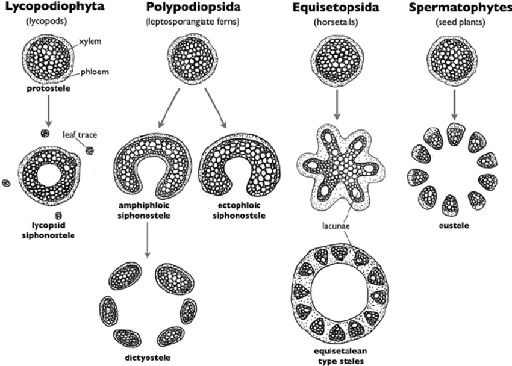

Chapter 13 Augalai
13.1 Įžanga
Augalai buvo mano nemėgstamiausia tema ruošiantis olimpiadoms, bet dabar manau visiškai priešingai. Augalai yra itin svarbūs mums - dėl bulvių maro Airijoje mirė penktadalis gyventojų, EUropoje įvyko ekonominė krizė dėl tulpių gumbų, o šafranas - žiedo piestelės - yra brangiausias prieskonis pasaulyje. Jeigu ne grūdai, ko gero nebūtume turėję feodalizmo ir nebūtume tyrinėję genetikos! Pažindamas augalus gali pažinti ne tik savo mitybą, bet ir žmogaus istoriją.
13.2 Ląstelė





Skiriasi nuo eukariotinės gyvūno ląstelės šiais bruožais:
- Chloroplastai - išsidėsto ląstelės kraštuose
- Centrinė vakuolė
- Plazmodezmos2 jungia ląsteles
- Ląstelės sienelė
- NĖRA centriolių
13.3 Chloroplasto struktūra ir funkcija
- Dviguba membrana (pūslelė pūslelėje), viduje yra stroma, kurioje yra išsidėstę tilakoidai. Tilakoiduose yra fotosintezės aparatas, tilakoidai yra išsidėstę į granas.
- Chloroplasto funkcija versti saulės energiją į angliavandenius. Tai vyksta dviem etapais: šviesos ir tamsos reakcijomis. Šviesos reakcijos
13.5 Ląstelės sienelė
13.6 Plastidės
Centrinė vakuolė
Terminai
Plazmodezmos - tai citoplazminis tiltelis tarp dviejų augalo ląstelių. Per jį gali judėti citoplazmos turinys, organelės bei virusai.↩